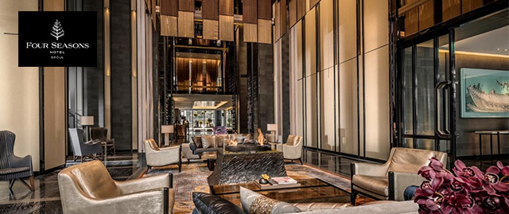

Reverberating with the energy and rhythm of the captivating city that surrounds, luxurious Four Seasons Hotel Seoul is a stylish new five-star hotel destination in Gwanghwamun, the very heart of Seoul.
DIRECTIONS & MAPS
Address : Nuri Ballroom(6F), Four Seasons Hotel Seoul 97 Saemunan-ro Jongno-gu, Seoul 03183 Korea
Tel : +82 (2) 6388-5000
GYEONGBOKGUNG PALACE
Gyeongbokgung Palace, constructed in 1395, was home to King Taejo (Yi Seong-gye) of the Joseon Dynasty. It was also the heart of Hanyang, which is Seoul today. The expansive palace grounds and its architecture shed light on authentic Korean history and culture. Arguably one of Korea’s most famous palaces, Gyeongbokgung Palace is viewable from select rooms in Four Seasons Hotel Seoul and is located near the Blue House, the President’s residence.
| Estimated travel time |
10-minute walk |
| Distance |
1 kilometre / 0.6 miles |
CHANGDEOKGUNG PALACE
Established in 1405, the Changdeokgung Palace is another remarkably restored and preserved attraction that shows a glimpse into the Joseon Dynasty. Changdeokgung reflects Korean harmonization with nature (its buildings were carefully framed into the landscape), compared to the more contemporary Gyeongbokgung Palace.
| Estimated travel time |
10-minute drive |
| Distance |
1.8 kilometres / 1.1 miles |
CHANGGYEONGGUNG PALACE
Built by the fourth ruler of the Joseon Dynasty, King Sejong, for his retiring father, King Taejong, Changgyeonggung Palace has served as residential quarters for royalty and was a park with a zoo during Japanese colonial rule. Today, the restored palace grounds, complete with a serene botanical garden, welcome visitors.
| Estimated travel time |
6-minute drive |
| Distance |
1 kilometres / 0.6 miles |
BUKCHON HANOK VILLAGE
Take a step back in time and visit Bukchon Hanok Village, sitting on the hill and surrounded by Gyeongbokgung Palace, Changdeokgung Palace and Jongmyo Shrine. View the colourful, traditional Korean houses called hanok that date back to the Joseon Dynasty, some of which now operate as tea houses, restaurants and gift shops.
| Estimated travel time |
6-minute drive |
| Distance |
2.7 kilometres / 1.8 miles |